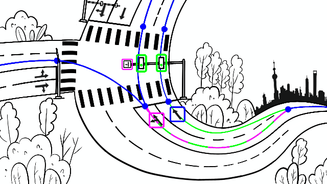
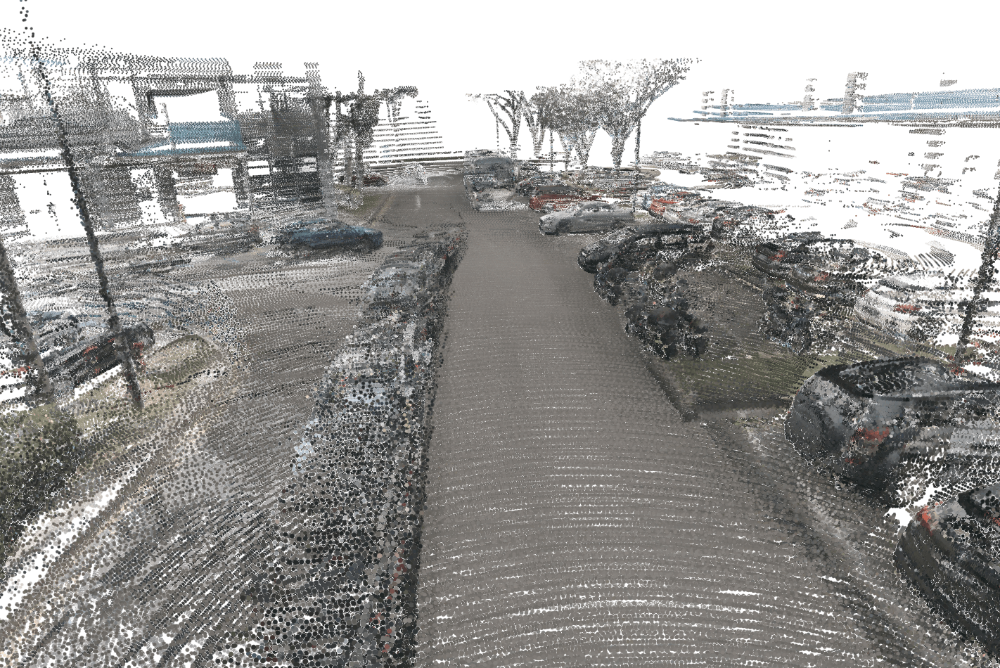
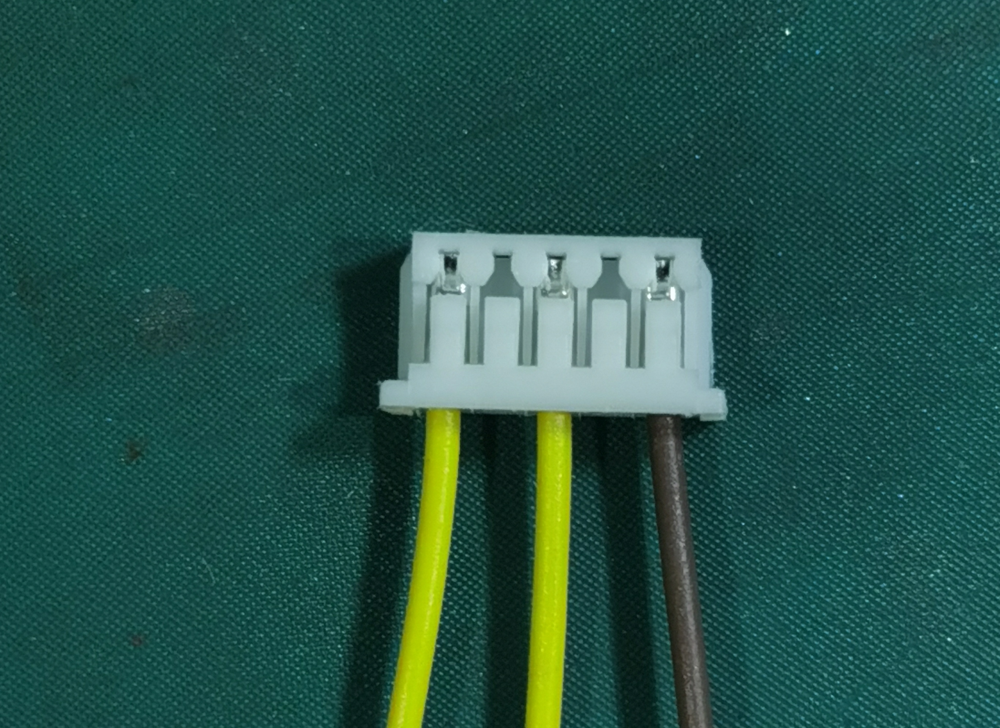
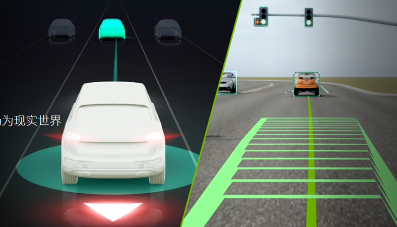
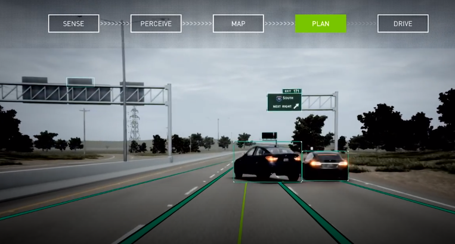
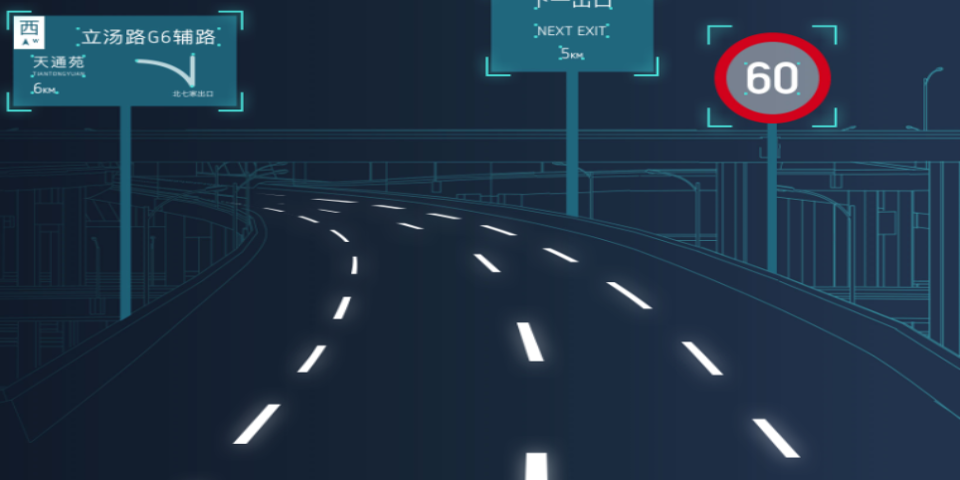
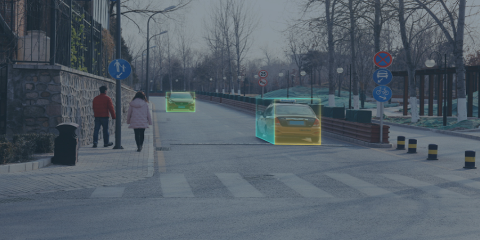
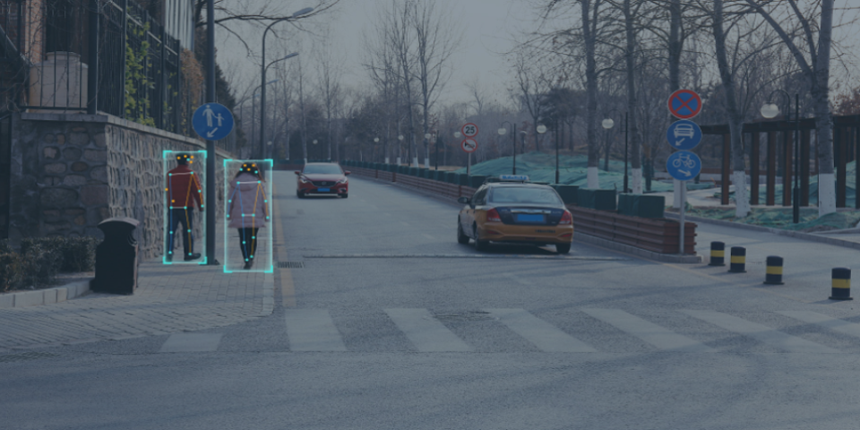
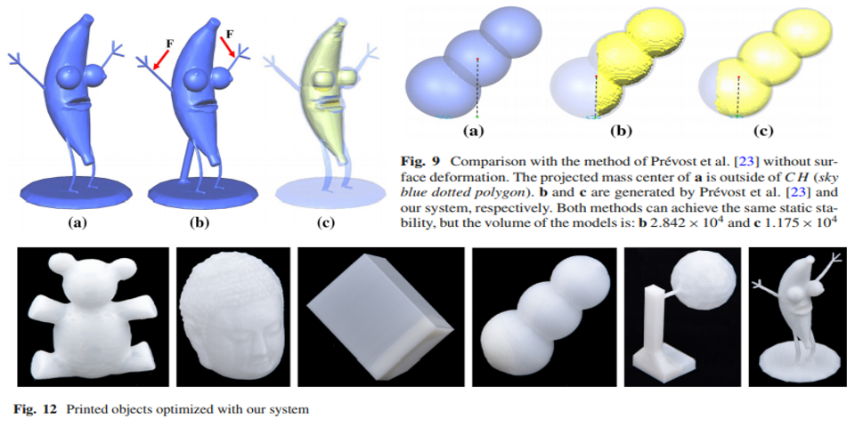
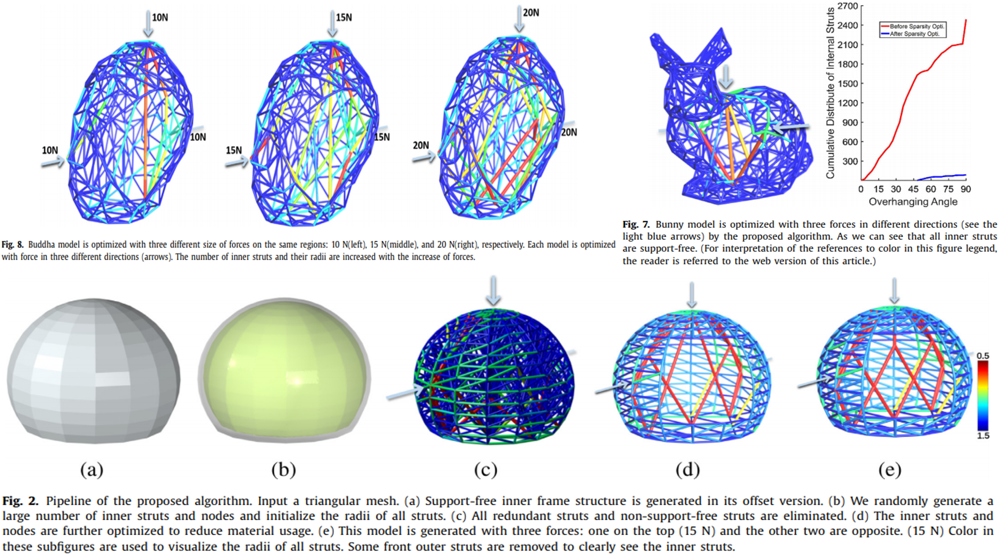

Recent Research


- 
- 
- 
- 
- 
- 
- 
- 
- 
- 
SiCheng Qian
- Algorithm Engineer
- figurebar@hotmail.com
- Creative Thinking(Online Working)
- My homepage
- School of Mathematical Sciences
- Dalian University of Technology
Research fields
- Machine Learning
- Deep Learning
- Image & Video Capturing
- Geometry Processing & 3D printing
- Point cloud analysis
- Shape analysis and model generation
- Labelling, segmentation & correspondence
Tools
- C/C++
- Python/MATLAB
- HTML/CSS/JS
- JAVA
- PHOTOSHOP/MAYA/MESHLAB/LIBGIL/
News
- Jan,2022-Now: lead project and team on NeRF learning to reconstruct 3D scene in Smart Factory.
- Jan,2022-Now: focus on NAS, distiller, quantization and other lightweight model techinique, few shot/semi-supervised learning methods, and so on in more areas and accumulate more experience on generic AI algos.
- Jan,2022-Now: lead project and team on 3D obstacle detection in BEV, HD map construction, Lane topology learning, General Obstacle Detection(occupancy) in ADS.
- Jan,2022-Now: focus on screen touch algothms, signal processing methods including SIN/COS demodulation, TDM/CDM matrix , CIC, FIR, IQ to improve SNR performance in HiSi, Huawei.
- Jan,2020-2022: lead project and team on human-machine interactions in XR, smart TV, smart Camera, which have been applied to many products, like Huawei Smart TV, XR product.
- Jan,2020-Now: focus on the NPU development of Davinci Architecture. And exploit more algos and products based on Davinci. More detials to come soon.
- August,2019-now: lead project and team on Object detection and Recognition & semantic segmentation & instance segmentation in consumer products on HI3796CV300/3556V200/3519AV100/3516DV300.
- October,2017-August,2019: Pedestrian detection & Face detection in smart security camera in Hi3516EV200/Hi3516EV300/Hi3518EV300.
We are the first pioneer to develop the AI network on the chip in this field.
The algorithms have gotten the best performance to promote the products to the first place in the world at so far.
And the products have been applied into Huawei, HIK, Dahua, Uniview, Infinova, topsee, and so on.
- June-October,2018: Motion estimation & Object Recognition, and the development of mixer-bit quantization method, which can be run timely at about 30fps in Hi3516EV100/Hi3559AV100.
- May,2017-June,2018: pedestrain、face、car detection & CPL recognition and detection.
- May,2017-Feb,2019: focus on the development of Wukong NPU Platform which can support caffe inference. We also focus on the quantization method which is non-linear quantized way in Wukong NPU.
The quantization methods include the post quantization method and online quantization method.
- April,2016-June 30, 2017: "Self-supporting Frame Structures" is accepted to SMI2017.
- April,2015-May 27, 2017: "Cross section-based hollowing and structural enhancement" accepted to CGI2017. More detials to come soon.
- 2012-2017: Mathematical Research in Optimized Methods and Machine Learning.